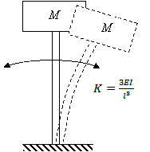
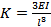

Mechanical Engineering →Vibration and Acoustics →List Of Experiments
Tuned Vibration Absorber
Vibratory systems around us
Here are some examples of physical systems where the vibrations are prominent and can be observed easily. In musical instruments the vibrations are intentional. The parts of musical instruments are designed so that they generate sounds that are pleasant to listen. In many cases the vibrations are unwanted and we try to minimize them.
1. A chandelier hanging from ceiling oscillates to and fro following an initial disturbance; maybe due to a breeze of air.
2. The oscillations of the chandelier at cathedral of Pisa, Italy, were studied by the famous scientist Galileo Galilee.
3. A load attached at end of a wire-rope of a crane oscillates to and fro due to initial disturbance; maybe due to sudden stopping of carriage of the crane while revolving about the vertical axis.
4. The pendulum used in clock of olden days used to oscillate to and fro once every second. i.e. it had a period of oscillation of one second.
5. String of a guitar, when plucked and left to its own, vibrates and makes a musical sound. It comes to rest after a while; the vibrations die out. Similarly, the diaphragm of a table vibrates when hit and left to its own. It also comes to rest after some time.
All these are examples of vibratory systems that are set into vibration following an initial disturbance. All these systems have three components: mass, due to which the system possesses inertia; elasticity, due to which potential energy can be stored; and components that dissipate energy causing the vibratory motion to be damped which bring them to rest after some time.
Vibration or vibratory systems are classified in number of ways. Some of the classifications are given below:
Free and forced vibration - A free vibration occurs due to initial displacement or velocity, or both, applied to the system only initially. There is no external force acting on the system when the system is vibrating. A forced vibration occurs when the system vibrates in response to external force applied continuously. When the force applied is periodic, i.e. it repeats itself after a fixed interval of time, the forced vibration is called periodic. If the periodic force and hence the resulting vibration varies sinusoidally with respect to time, the vibration is called harmonic. If the force is not periodic, the forced vibration is called aperiodic or random.
Damped and undamped vibration -
When the vibratory system has elements that offer resistance to motion, energy is continuously dissipated and the free vibrations of such systems come to halt after some time. This is called damped vibration and such systems are called damped systems. Forced vibration of a damped system continues as long as the force acts but some of the work done by the external force is lost in overcoming the resistance offered by the damping elements. Systems without damping elements are called undamped systems and their vibrations are called undamped vibrations. All systems in nature have some or the other damping element and their natural vibrations are damped. Hence they come to rest after some time following free vibrations. Nevertheless, we study the vibration of undamped systems because the concepts developed in studying them are useful in analyzing and understanding the phenomena occurring in vibration of damped as well as complicated systems. When the force of resistance offered by a damping element is proportional to velocity of mass of the system, it is termed as viscous damping and the damping element is called a viscous damper. If the force of resistance has a constant value, it is termed as Coulomb damping. Damping due to dry friction shows this kind of behavior. Coulomb damping can occur when the system has components rubbing over each other. There are other types of damping also which shall be discussed later.
Degrees of freedom : The vibratory systems are classified as single-degree-of-freedom systems, Multi-degree-of-freedom-systems or continuous systems. The number of degrees of freedom corresponds to the number of independent co-ordinates required to completely describe the motion of the system. In fact, it is the sum of the possible ways each mass can move independently of other masses. The translation of a mass along the three axes, X, Y and Z, and the three rotations about each of these axes constitute possible ways of motion of a mass. Many times, many of these six motions of a mass are restricted and a mass can have one or two degrees of freedom, i.e. only translation or translation and rotation of a single mass about any one of the axes. Physical system These days we have number of towering buildings. Many a times the residential part of such a building is supported on a tall concrete structure. One of such buildings is the ‘Milad Tower’, situated in Tehran, Iran. Its head consists of a large pod with 12 floors and below is a staircase and elevators to reach the area. The oscillations of such tall buildings, in response to earthquake and wind, are important from design point of view. And to study these oscillations, we must know the characteristics of its natural vibration. Analysis of such a physical system can be very much complicated. To obtain first rough estimate of the natural frequency of vibration, the problem can be stated and the physical system can be modeled in a simple way as described below. Problem statement To find natural frequency of oscillation of the tower in the direction perpendicular to the vertical axis (i.e. natural frequency of transverse oscillation of the tower) and position of the head at any given time. Physical model of the system M  The physical model for the system under consideration can be as shown in This is the simplest model. Only the mass of the building at the top is considered and it is considered to be concentrated at one point. The mass of the vertical pillar supporting the buiding is neglected and is considered to be a cantilever offering only elesticity. Thus it becomes a single degree of freedom system with single mass and only one way of motion of the mass: translation in direction perpendicular to the vertical axis of the building. Further we assume that the amplitude of this motion to be small. The equivalent stiffness of the cantilever is given by

Linear and Non-linear Vibrations : Vibration is said to be linear if the damping force is proportional to velocity, inertia force is proportional to mass, and restoring force is proportional to displacement. If any of this proportionality is not satisfied, the system is said to be non-linear.
Solving engineering problems : Analytical methods are usually applied to models of actual systems. We carry out experiments on models if physical systems are not available for testing. While preparing such models, we exclude superfluous details of the system but include all essential and important features of the actual system. While doing so, we idealize and approximate important behaviour of the system without affecting much the accuracy in predicting the behaviour. The system model so developed provides ease of application of analytical and experimental techniques. Once a satisfactory model is developed, laws of Physics can be applied which give a set of mathematical equations relating the properties and variables of the system. Such a set of mathematical equations is called mathematical model of the system. Solving the set of equations (or a single mathematical equation) provides expression for the system variable in terms of location and time. We call this as ‘solution’ of the problem. As an illustration of the concepts described above, see the example given below.
. The symbols carry their usual meanings.
Mathematical model
Using Newton’s second law of motion, the equation of motion of the mass is written as

The first term is the inertia force which is equal to mass multiplied by acceleration and the second term is the spring force given by stiffness of the spring multiplied by its elongation or compression.
The differential equation is a mathematical model of the system.
General Solution
The solution to the above differential equation is given by

A and B are constants that depend the initial conditions, i.e. the displacement and velocity of the mass when we started measuring our time.
These are known as initial conditions.
 is the natural frequency in radians per second and is given by
is the natural frequency in radians per second and is given by

Particular solution obtained from the initial conditions
Substituting the initial conditions in above expression, we can obtain the values of A and B. Thus if X0 and V0 are the initial displacement and velocity, respectively, given to the mass, the above expression will yield values of A and B as  and
and 
Now the expression for x becomes

And we can obtain the value of x at any time t from this expression.
Thus we have obtained the expressions for natural frequency and position of the head at any given time ‘t’ and the problem stated by the problem statement is solved.